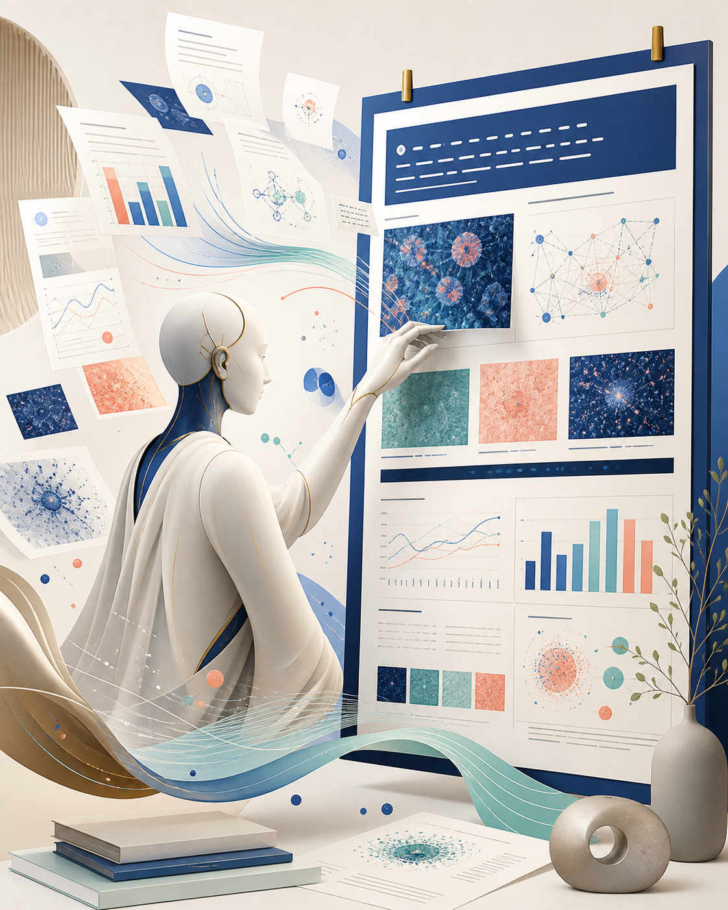

AutoDesign, 논문을 포스터로 바꾸는 ‘디자인 에이전트’ 실험

AutoDesign 논문은 긴 논문을 학회 포스터 같은 구조화된 시각 결과물로 바꾸는 과정을 장기 에이전트 작업으로 다룹니다. 연구진은 PosterBench를 만들고, 코드 에이전트가 반복 피드백을 받아 레이아웃·요약·시각 구성을 개선하는 DesignHarness를 학습시켜 상용 시스템보다 높은 평가를 얻었다고 보고했습니다.
인사이트: 교수자와 디자이너에게 중요한 점은 ‘자동 포스터 생성’ 자체보다 복잡한 자료를 어떤 순서와 밀도로 재구성할지 에이전트가 반복 학습한다는 방향입니다. 실제 수업이나 전시 리서치에 쓸 때는 원문 이해 오류, 도표 재해석 오류, 시각 위계의 획일화를 사람이 검수해야 하며, 최종 디자인 판단까지 맡기기보다는 초안 생성기로 보는 것이 현실적입니다.